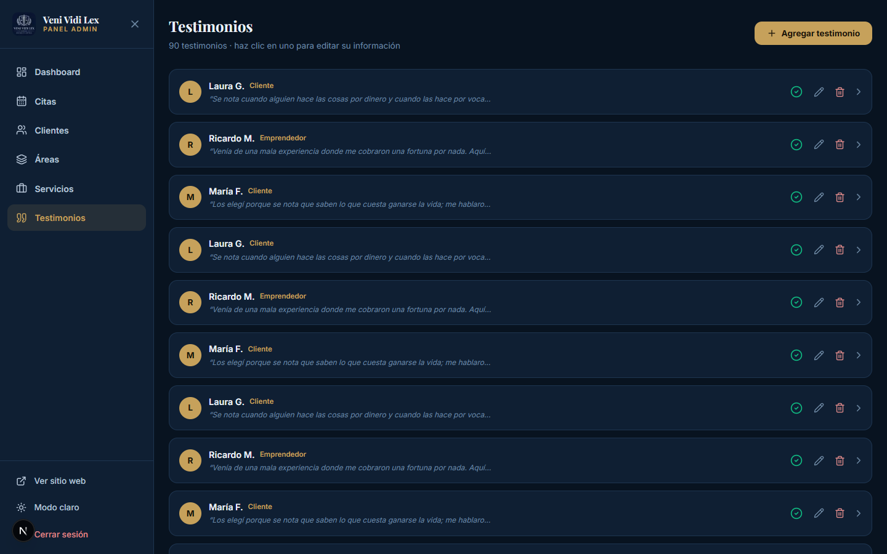

Bienvenido, Jonathan
Este manual te guiará paso a paso en el uso de Veni Vidi Lex, el sistema digital de tu despacho. Aquí aprenderás a recibir citas de tus clientes, llevar el control de casos y expedientes, y generar propuestas de servicios en PDF.
El sistema se divide en dos grandes partes:
- La página pública: lo que ven tus clientes cuando visitan tu sitio (información del despacho y el asistente para agendar citas).
- El panel de administración: donde tú gestionas citas, clientes, expedientes, áreas, servicios y testimonios.
No necesitas conocimientos técnicos. Todo está diseñado para que puedas usarlo fácilmente desde tu computadora o celular.
Acceso rápido: El sistema está disponible en internet en cualquier momento. Solo necesitas tu usuario y contraseña para entrar al panel.
1
La página principal
Es la primera pantalla que ven tus clientes. Presenta tu despacho y los invita a contactarte o agendar una cita.
Qué encuentra el cliente aquí
- Portada (Hero): el mensaje principal "Te defendemos como si fuera nuestro propio caso", con botones para Agendar cita y WhatsApp.
- Cuéntanos tu caso: situaciones comunes (divorcio, despido, problemas con contratos, etc.) que llevan al cliente directo a tu WhatsApp.
- Conoce a tu abogado: tu foto, experiencia y valores del despacho.
- Áreas de práctica y Servicios: las especialidades del despacho con sus honorarios.
- Testimonios: historias de clientes satisfechos.
- Contacto: teléfono, WhatsApp, correo y las direcciones de tus dos sucursales con mapa.

Página principal que ven los visitantes con el hero y la invitación a agendar.
Botón de WhatsApp: En la esquina inferior derecha hay un botón flotante de WhatsApp. Cuando un cliente lo usa, el mensaje llega directo a tu número.
2
Agendar una cita
El asistente guía a tu cliente en 4 pasos sencillos para reservar una cita desde la página web.
1
ServicioEl cliente elige el servicio que necesita. El sistema avanza automáticamente al siguiente paso.
2
FechaSelecciona un día disponible en el calendario (los domingos no están disponibles).
3
HoraElige un horario disponible de la lista.
4
DatosEscribe su nombre, teléfono (10 dígitos) y notas opcionales. Confirma la cita.

Asistente para agendar una cita, con el logo del despacho y los 4 pasos.
Clientes que ya existen
Si el cliente ya se ha atendido antes, puede elegir "Ya soy cliente" y escribir su número de cliente (por ejemplo CLI-001). El sistema completa sus datos automáticamente y relaciona la nueva cita con su expediente.
Consejo: Al terminar, el cliente recibe su número de cliente. Ese número le sirve para futuras citas sin volver a escribir sus datos.
3
Cómo te contactan los clientes
La página tiene varios caminos para que el cliente se comunique contigo de forma directa.
Canales de contacto
- WhatsApp: desde el botón flotante, desde la sección "Cuéntanos tu caso" o desde la sección de contacto. Cada caso predefine un mensaje para que sea más fácil para el cliente.
- Teléfono: los clientes pueden llamarte directamente desde la sección de contacto.
- Correo y redes: tu email e Instagram están visibles.
- Mapas: las dos sucursales muestran su ubicación en Google Maps.
Todo llega a ti: Las citas se guardan automáticamente en tu panel (sección Citas). Los mensajes de WhatsApp llegan a tu número. No tienes que hacer nada extra.
4
Cómo ingresar al panel de administración
El panel de administración es tu centro de control. Para entrar, sigue estos pasos:
1
Abre el panelAgrega /admin al final de la dirección de tu sitio, por ejemplo: tusitio.com/admin.
2
Escribe tus credencialesIngresa tu usuario y contraseña de administrador.
3
Haz clic en "Iniciar sesión"Serás redirigido al panel principal.

Pantalla de inicio de sesión del panel de administración.
Importante: No compartas tu contraseña con nadie. Si la olvidas, contacta al administrador del sistema.
5
Panel principal (Dashboard)
Al ingresar, verás el Dashboard: un resumen de toda la actividad de tu despacho.
Qué información muestra
- Citas hoy: cuántas citas tienes para el día.
- Citas pendientes: las que aún no se confirman.
- Clientes: el total de clientes registrados.
- Casos activos: los expedientes en curso.
Debajo de las tarjetas está el acceso rápido a todas las secciones del panel.

Panel principal con las tarjetas de resumen y el acceso rápido.
Menú lateral: A la izquierda tienes el menú con todas las secciones: Citas, Clientes, Áreas, Servicios y Testimonios. También puedes cambiar el tema a modo claro.
6
Citas (agenda)
Aquí gestionas todas las citas que llegan desde la página web o que registras tú manualmente.
Qué puedes hacer
- Ver el calendario: navega entre meses con las flechas. Los días con citas se marcan con un punto dorado.
- Consultar un día: haz clic en un día para ver sus citas.
- Cambiar el estado: Pendiente → Confirmada → Completada → Cancelada.
- Nueva cita: con el botón Nueva cita registra una cita manualmente.
- Eliminar: quita una cita que ya no necesites.

Agenda de citas con el calendario y el detalle del día seleccionado.
Seguimiento: Usa los estados para saber en qué etapa está cada cita. Así no se te escapa ninguna consulta.
7
Clientes y expedientes
Aquí está toda la información de tus clientes y sus casos. Haz clic en cualquier cliente para abrir su ficha completa.
Lista de clientes
Cada tarjeta muestra el número de cliente, su nombre, teléfono, correo y cuántos expedientes y asuntos tiene. Haz clic en la tarjeta (en cualquier parte) para abrirla.

Lista de clientes con su número, datos de contacto y número de casos.
Ficha del cliente
Dentro de la ficha puedes editar los datos del cliente y gestionar sus casos:
- Asuntos: materia, actor, demandado, asunto, expediente, estatus y juzgado de cada caso.
- Expedientes: la etapa del caso y las preguntas/respuestas del cliente.
- Documentos: adjunta documentos del caso con su estado.
- Seguimiento: notas sobre el avance del caso.

Ficha del cliente con sus datos, asuntos y expedientes.
Atajo: Desde la ficha también puedes generar la propuesta de servicios (siguiente sección).
8
Generar una propuesta de servicios (PDF)
Desde la ficha de un cliente puedes crear una propuesta o presupuesto de servicios en PDF, listo para entregar.
1
Abre el clienteEn la ficha del cliente, haz clic en Generar contrato.
2
Revisa los datosEl formulario ya viene lleno con los datos del cliente, el caso y el despacho. Corrige o completa lo que haga falta (materia, objeto, titular, autoridad, etc.).
3
Escribe los honorariosCaptura el honorario total. El sistema calcula automáticamente el monto en letra y las dos exhibiciones (50% cada una, ajustable).
4
Genera la propuestaHaz clic en Generar Propuesta. El PDF se descarga en tu computadora.

Recuadro para generar la propuesta, con los datos precargados y los honorarios.
Personalizar la redacción del documento
Si necesitas ajustar el texto del documento, expande "Editar redacción del documento":
- Las píldoras doradas son campos que se llenan solos (nombre del cliente, objeto, honorarios, etc.).
- Puedes escribir texto libremente alrededor de las píldoras, borrarlas o agregar más con ＋ Insertar campo.
- Si desordenas el documento, usa Restablecer contrato para volver al formato original.
Importante: El PDF no se guarda automáticamente en el sistema. Descárgalo y guárdalo en tu computadora o en tu expediente.
9
Áreas de práctica
Las áreas son las especialidades del despacho que se muestran en la página principal.
1
Nueva áreaCon Nueva área agrega una especialidad (nombre, descripción e icono).
2
Editar o eliminarPuedes modificar una área existente o quitarla si ya no la ofreces.

Pantalla de administración de áreas de práctica.
Visible al instante: Los cambios que hagas aquí se reflejan de inmediato en la página pública.
10
Servicios
Los servicios son lo que ofreces, con sus honorarios. Aparecen en la página y en el asistente de citas.
1
Nuevo servicioAgrega el nombre, descripción, honorario (ej. "Desde $800") y notas.
2
Editar o eliminarActualiza precios o quita servicios que ya no ofrezcas.

Pantalla de administración de servicios con sus honorarios.
Honorarios claros: Los precios que pongas aquí se muestran en la página, así el cliente los ve desde el inicio.
11
Testimonios
Los testimonios son las opiniones de tus clientes que generan confianza en la página.
1
Nuevo testimonioAgrega el nombre del cliente, su cargo o tipo de caso, y su comentario.
2
Editar o eliminarActualiza o quita testimonios cuando lo necesites.

Pantalla de administración de testimonios.
Recomendación: Pide a tus clientes satisfechos una frase corta; es la mejor publicidad para tu despacho.